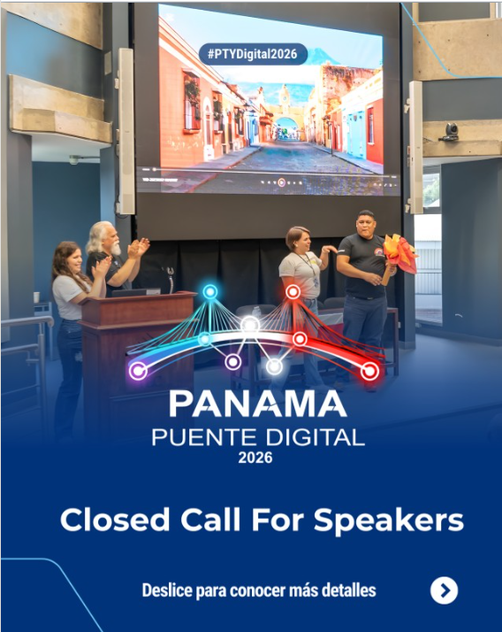
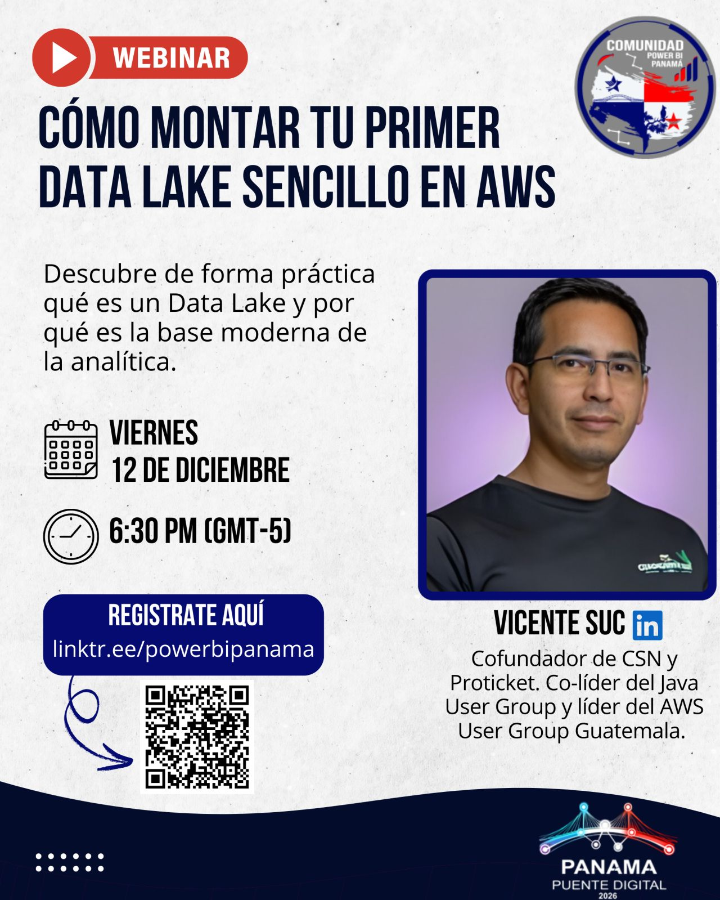
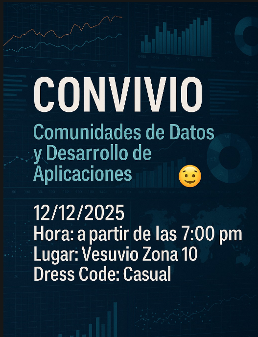

A que me dedico
Me especializo en dirigir y crear soluciones seguras, escalables y modernas sobre la nube de AWS.
He liderado proyectos para los sectores de salud, educación, BPO's, conciertos y plataformas digitales, combinando AI, servicios serverless y visión de negocio. Actualmente impulso iniciativas en educacion y tecnologia.
Amazon Web Services
Mi experiencia cloud es en AWS,la plataforma de computación en la nube más adoptada a nivel mundial, diseñada para ofrecer infraestructura segura, escalable y confiable.
Java
Una de mis grandez fortalesas es trabajar en JAV, una de las plataformas de desarrollo más maduras y confiables del mundo empresarial.Las empresas lo adoptan por su estabilidad, seguridad y portabilidad.
Microsoft
Tambien trabajo con tecnologias Microsoft, es uno los principales proveedores tecnológicos del mercado corporativo, con un ecosistema enfocado en productividad, nube y software empresarial.
Comunidades que ayudo a liderar
La comunidad de Java en Guatemala reúne a desarrolladores y entusiastas para compartir conocimientos y fortalecer el ecosistema tecnológico local. Organizamos eventos y actividades centradas en la innovación y el crecimiento profesional.

La comunidad de AWS en Guatemala conecta a profesionales y empresas para explorar soluciones en la nube y compartir mejores prácticas. Organizamos eventos, talleres y conferencias para promover el uso de AWS en todos los sectores.

Mis Eventos Proximos

De la arquitectura en la nube a la analítica deportiva en AWS
En abril estare en Panamá, en la Jornada Centroamericana de Comunidades de Transformación Digital, un espacio que no solo conecta tecnología, sino personas, comunidades y visiones compartidas para la región.
Comunidad: Panama Puente Digital
Eventos Recientes

Data Lakes en AWS
Descubre, de forma práctica, qué es un Data Lake y por qué se ha convertido en una de las bases esenciales para la analítica y los proyectos de datos.

Convivio de comunidades Tech
Recientemente tuvimos nuestro convivio de comunidades Tech para conversar y organizarnos para eventos de 2026
Convivio de la comunidad de python
Fuimos invitados al evento de la comunidad de python Guatemala junto a otras comunidades, estuvo genial!